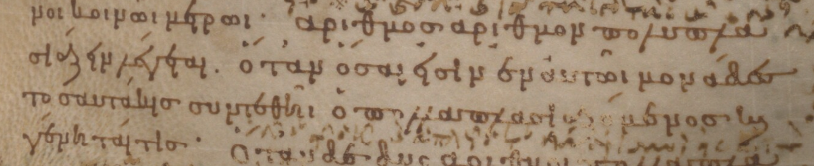
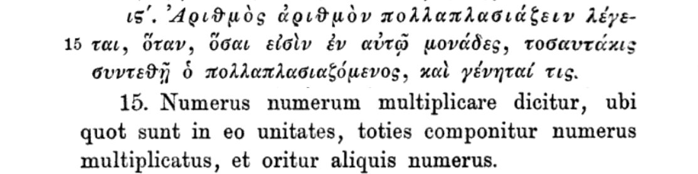

『原論』の写本で現存する最古のものは、ボドリアン図書館所蔵のMS D'Orville 301。パトライのアレタスが書記のステパノスに筆写させ888年に完成したことが、依頼者の書き込みから分かっている。アレタスは、『ビブリオテカ』の編者フォティウスの弟子で、後にカッパドキアはカエサレアの大司教になった。 この写本は注解者アレクサンドレイアのテオン(悲運の女性研究者ヒュパティアの父)による追加を含み、現代の校訂本では異本と扱われる。ただし、乗法の定義では校訂本文とほぼ同じである (123r)。

1533年、ギリシャ語の『原論』が初めて印刷され出版された。Grynaeusが校訂した。乗法の定義は88ページ。 序文でGrynaeusはロンドンとダラムの司教カスバート・タンスタルに謝辞を述べている。 この人はトマス・モアの友人であり、共に外交使節として大陸に渡りエラスムスらと交流があった。タンスタルの算術書はイングランドで最初に出版された算術書であった。
1804年、Peyrardがヴァティカン図書館で原論のギリシャ語古写本を発見した(MS Vat.gr.190.pt.1)。テオンによる追加を含まない写本の発見はそれまで知られておらず、この発見を機にユークリッド本来の原論のテキストへの関心が高まった。 乗法の定義はGrynaeus (1533)と同一である(102v, 103r)。この写本は9世紀のものとされる。

現代、ユークリッドのギリシャ語原文の定本とされるのは、HeibergとMengeによる校訂本。乗法の定義はGrynaeusの校訂、ヴァティカン写本と同じであった。Heiberg & Menge (1884: 186,7)を加工した画像で引用する。
